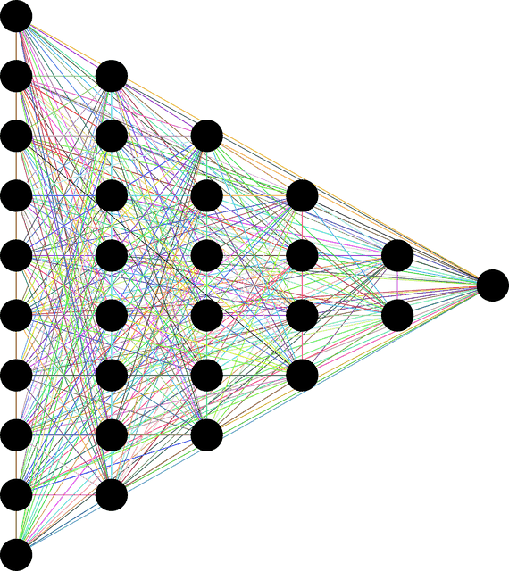

Neural Architecture Search
- Algorithms for automatically searching deep neural network architectures for image classification, implemented in Python and PyTorch.
- Evolving Neural Architecture Using One Shot Model, ACM SIGEVO GECCO 2021.
- Progressive Evolutionary Neural Architecture Search, ACM SIGEVO GECCO 2022.
- Novelty Driven Evolutionary Neural Architecture Search, ACM SIGEVO GECCO 2022.
- Neural Architecture Search using Covariance Matrix Adaptation Evolution Strategy, Evolutionary Computation (MIT Press) 2023.